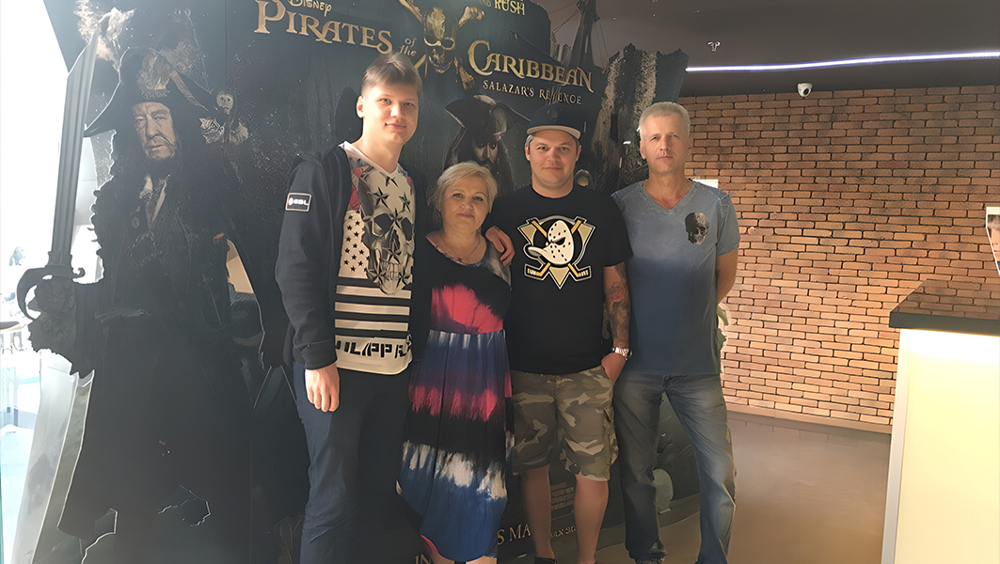
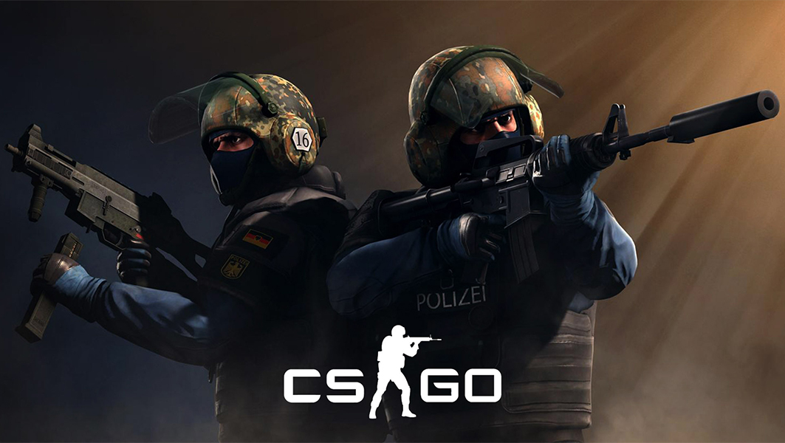

ДИТИНСТВО
ЖОВТЕНЬ 2/1997
Сім'я
Саша народився другого жовтня 1997 року у місті Києві.
Його мама, Анжеліка була лікарем, а батько, Олег – суворим військовим, який підтримував порядок та дисципліну в сім'ї. Саша – друга дитина в родині, молодший за свого брата Олексія на 10 років.

Знайомство з комп'ютером
У Саші не було звичайних хобі, але з самого дитинства його батьки серйозно інвестували у освіту сина. Вимоги до оцінок були високими, а найстрашнішим покаранням для Саші було заборона комп'ютерних ігор. Знайомство з якими настало через те, що Олексій, брат Саші, старший за нього на цілих 10 років і вже в 4 роки він знав про комп'ютерні ігри, звичайно ж, тому що спостерігав, як грає його брат. Як це часто буває хто з братів старший, той і керує комп'ютером.
Сім'я Костильових не була винятком. Олексій міг дозволити Саші тримати мишку і стріляти, поки сам володарював клавіатурою, але це було максимум. А повний доступ до комп'ютера Саша отримував лише тоді, коли його брат кудись відходив.
Школа
У початкових класах школи Саша був дуже активною дитиною, і мама навіть жартома називала його пропелером. Він не давав спокою однокласникам і постійно когось задирав. Все це доходило до таких масштабів, що батьки ображених дітей постійно чекали маму Саші в школі, щоб скаржитися на черговий проступок сина.
З часом це змінилося, в основному завдяки новому захопленню Саші - відвідуванню комп'ютерних клубів.
Комп'ютерні клуби
Швидко його поглинула атмосфера клубу. Проте на початку він їздив туди не ради гри "Counter-Strike". Саша був захоплений грою "Heroes of Newerth". І одного разу вони разом з другом Денисом прийшли до клубу, щоб пограти в неї.
Але до них підійшли якісь хлопці та запросили їх зіграти в турнірі 2 на 2, в Counter-Strike 1.6. Хлопці погодилися, задля розваги, не маючи великого досвіду в CS 1.6. Максимум, він міг пограти в неї з братом. Загалом, вони були знайомі з грою, але не більше.

ЮНІСТЬ
ЖОВТЕНЬ 2/1997
Counter-Strike
З того самого турніру Саша почав закохуватися в "Counter-Strike". Він став грати в неї все частіше і заробляти в ній значні успіхи, постійно з'являвся на вершині турнірів та проводив багато часу в комп'ютерному клубі.
Тоді графік Саші виглядав таким, що він прокидається о 7:30, о 8:30 вже в школі, о 15:00 повертається додому, а о 16:00 вже в кібер-арені, звідки повертається лише о 3 годині ночі. І незважаючи на все це, Саша встигав принести додому гарні оцінки, оскільки якщо вони були погані, його не пускали в клуб, а також, навіть не дозволяли грати вдома.
На початку брат Олексій давав Саші гроші на проїзд до клубу, що складало близько 10-15 гривень за проїзд у метро. Але потім, коли Саша став стабільно заробляти 200-300 гривень з призових, він почав їздити на таксі. Проте, коли Саша виграв свої перші призові гроші в житті, а саме 200 гривень, він повністю віддав їх своїм батькам без причини.
Перехід на CS:GO
До 14 років Саша був звичайним гравцем в "Counter-Strike", поки не вийшла нова версія гри.
На відміну від старших гравців, яким було важко звикнути до нової версії CS, Саші, як гравцю нового покоління, CS:GO сподобалась від самого початку, і вже через рік він досяг стабільного рівня гри.

Онлайн івенти
В ті часи більшість невеликих турнірів переходили в онлайн, і Саша все рідше відвідував комп'ютерні клуби. Це дійшло до того, що в якийсь момент його серйозно звинувачували в читах і сказали, що єдиний спосіб довести свою невинність - приїхати на LAN і продемонструвати свої навички там.
Проте, чи було йому важко, чи не так?
Саша приїхав, зробив два класних ейси в одному матчі і уїхав. Більше ніхто не мав запитань до нього.
Початок професійної кар'єри
Відразу після цього команда Олександра LAN DODGERS поїхала на українські кваліфікації до "ESWC 2013" - досить великого і престижного турніру. Хлопці вийшли з групи, забравши 14 раундів у команди KerchNET, які тоді були одними з найкращих складів в Україні. Це допомогло їм вийти з групи, але в кінці кінців хлопці досягли лише півфіналу. Але насправді це дуже-дуже хороший результат.

Бан за чити
У лютому 2014 року Блейд збирає команду Courage, куди запрошує Саню, на що він, звичайно ж, погоджується.
Під час гри за Courage Gaming, s1mple отримує бан за чити. І це бан не помилковий, а досить реальний. Одного разу Саша, граючи з другом в CS 1.6, вирішив скачати чити і подивитися, що це взагалі таке. Звичайно ж, на звичайному паблік-сервері. Програма античиту від ESL, яка стояла на його комп'ютері, відразу виявила ці веселощі і видала бан.
Потім s1mple створив новий аккаунт на ESL і спокійно грав на ньому. Але під час гри за Courage виявився його старий аккаунт, і йому було накладено бан на участь в турнірах на два роки.
Загалом, там нічого серйозного не було. Хлопець просто погрався декілька хвилин на пабліку під чужими обліковими записами в CS 1.6 коли вже повністю пішов з цієї гри. Але бан є бан. Через це команда Courage Gaming вилетіла з відбіркових на мейджор в 2014 році, що, звичайно ж, нікого не порадувало.
Але організація вступилась за Саню, захищала його перед хейтерами, які подумали, що це бан за CS:GO і навіть намагалися зв'язатися з ESL і зняти цей бан. Але, на жаль, безуспішно.
Розпад LAN DODGERS
З невідомих причин уже через два місяці, а саме в квітні, хлопці покинули організацію LAN DODGERS і вирішують продовжувати грати разом.
Вони називають свою команду Hashtag і вже тут забирають 4,150$ за перше місце на турнірі у Воронежі. Здається, це успіх, але після цього s1mple відразу покидає команду.
За його словами, він пішов через низький рівень гри, а якщо офіційно, то команда не змогла зігратися на емоційному рівні. Саша пішов до старих друзів у LAN DODGERS, але не зіграв з ними жодної офіційної гри, заявився на 10-ий сезон про серії від STARLADDER з міксом Amazing Gaming, де вони посіли перше місце, а на наступний день його забрали в HellRaisers
HellRaisers
Офіційне підписання в HellRaisers відбулося 17 вересня 2014 року. Там він провів трохи менше чотирьох місяців і пішов у січні 2015 року
Єдине перше місце було на українських кваліфікаціях ESWC 2014, де не було жодного призового фонду. Але окрім цього турніру серед непоганих досягнень можна виділити п'яте-восьме місце на мейджорі DreamHack Winter 2014, де команда заробила 10,000$.
Щоб бути точнішим, s1mple покинув команду не самостійно, а був вигнаний з неї. Незважаючи на неймовірну гру та форму.
HLTV відразу побігли брати у Саші інтерв'ю, де він сказав такі слова: "Мені розповіли про мій пік лише вчора. Я вдячний, що зміг пограти з такими гравцями. Вони навчили мене багато чому. Вони виключили мене з команди через мій бан і погану репутацію в цілому."
FlipSid3 Tacticts
На наступний день Саша приєднується до команди Блейда DAT Team, з якими проводить так собі один єдиний турнір, а потім сідає на лаву запасних на два тижні. Все через той самий бан. Тому, DAT Team грали ESL турнір, який не можна було пропустити, і брали туди заміну на місце s1mple.
З 1 лютого хлопці всю команду підписують FlipSid3 Tacticts і s1mple грає там аж до липня місяця. Вони виграли невеликий турнір у Воронежі і досягли півфіналу на двох нормальних турнірах. У обох випадках вони програли на Na'Vi, але не змогли показати якісь справжньо потужні результати.
Після одного з цих турнірів Саня розкритикував своїх командування і, цитуючи, поклявся, що більше ніколи не буде грати з ким-небудь з своєї команди.
А через п'ять днів він оголошує, що бере перерву від гри в КС. Проте всього через чотири дні на HLTV виходить новина, що Саня разом зі своїм другом Кібер Фокусом створили мікс і грали там на протязі липня і серпня.
У вересні Саша йде стенд-іном в HellRaisers, потім знову протягом місяця сидить без команди, а потім йде стенд-іном в FlipSid3, команду, з якою недавно клявся більше ніколи не грати.

Team Liquid
кінці 2015 року американська команда Liquid шукала собі п'ятого гравця. Вони хотіли підписати Фінна Алу, але він відмовився переїжджати до США, і хлопці вирішили запропонувати це місце sqmple. Вже тоді було зрозуміло, що Саша своїм скілом тянув на рівень тір 1. До того ж він познайомився гравцем Hiko, з яким у них склалися хороші взаємини.
Порадившись з батьками, Саша, який тоді навчався на перекладача з китайської мови, перейшов на заочку і виїхав до США.
Він підписав контракт на два роки, однак, незважаючи на це, його перший офіційний матч за Liquid відбувся 2 лютого, а останній 10 липня, всього п'ять місяців, з яких він провів 2,5 місяці в запасі.
Протягом цього часу хлопці брали участь на мейджорі MLG Columbus 2016 і посіли там 4-е місце, а також 5-6-е місця на великому турнірі ECS Season 1 Finals. Вони також потрапили в гранд-фінал мейджору ESL One Cologne 2016.
Проте Саша все ж покинув команду, офіційно заявивши, що сильно сумує за домом. За слухами, причиною його відходу було не лише самовідчуття, але й те, що якби він не покинув команду самостійно, то його сварки з Elige могли б привести до розпаду команди.
ЗРІЛІСТЬ
ЖОВТЕНЬ 2/1997
Natus Vincere
Літом 2016 року s1mple разом зі складом команди Liquid потрапив в фінал мейджору, але потім повернувся до своєї рідної України і вирішив не продовжувати грати з американською командою.
Виявилося, під час гри за Liquid в 2016 році s1mple активно спілкувався з гравцями команди Natus Vincere, зустрічаючись з ними на LAN турнірах, а також підтримував дружні стосунки з менеджером Юджином і час від часу спілкувалися з ним. Влітку 2016 року s1mple отримав пропозицію від команди Faze, над якою він активно роздумував. Проте через тиждень з Сашою зв'язався одним з гравців Na'Vi і запропонував перейти до їх команди, що дуже здивувало гравця. Після не довгих роздумів s1mple відхилив пропозицію Faze та погодився перейти до складу Na'Vi.
4 серпня Na'Vi офіційно заявили, що символ замінює Зевса в їх складі, а з 17 вересня він став другим снайпером команди. Перша перемога настала вже в жовтні, коли вони виграли ESL One New York 2016. Де він отримав своє перше MVP, зараз в нього вже 21. В листопаді гравці досягли топ-4 на EPICENTER 2016, і геймінговий рік підходив до кінця. лише під час Нового року Сашу майже вигнали з ФПЛ. Він грубив багатьом гравців під час матчів, і вони запропонували тимчасовий бан на участь Олександру. Але Сашко сам або за допомогою керівництва Navi публічно приніс вибачення і уникнув дискваліфікації з ФПЛ.
30 грудня Торін назвав його топ два гравцеми 2016 року. А 17 січня Саня увійшов у топ чотири топа від HLTV.
Natus Vincere 2017
На початку 2017 року відбулися деякі зміни в складі Na'Vi. В квітні вони досягли півфіналу на StarLadder i-League StarSeries Season 3, а в червні посіли друге місце на Adrenaline Cyber League. Далі було досягнуто топ-4 на ESL One Cologne. Проте влітку відбувся PGL Major Kraków 2017, де команда Gambit стала сенсаційним переможцем, а Na'Vi, яка їхала туди як одна з найкращих команд світу, посіла розчаровувальне 12-14 місце.
Після цього почалися чутки про можливі заміни, які підтримав інсайдер Дон хачи, заявивши, що Sized та Guardian будуть посаджені на лаву запасних. В цей час s1mple дуже детально висловив свою думку щодо цієї ситуації -"Нині всім дуже важко. Ніхто не знає, що нам робити, дуже складно. Усі намагаються зібратися з думками, що сталося. Ми начебто готувалися, а начебто за рік хорошої підготовки й не було, оскільки у когось весілля, у когось ще щось, і воно ось це все впливає. І потім виходить такий результат. Важко всім це переосмислити. Я не знаю що буде далі. Решафли можливі у будь-якій команді. У нас є домовленість, що вирішують ці питання не гравці, а менеджер та директор."
У другій половині 2017 року команду очікувала значна реструктуризація. На місце Guardian прийшов zeus разом з тренером kane, а в листопаді гравці підписали electronic на місце sized. Більше того, з приходом zeus Саші довелося перестроїтися на роль основного снайпера, що було великою та важкою роботою для гравця, який раніше майже завжди грав зі звичайними гвинтівками.
На той момент команда Na'Vi перебувала на найнижчій позиції в історії рейтингів - 17 місце. Проте, вони змогли досягти першої позиції на турнірі від DreamHack на початку грудня, де, крім них, брали участь команди Gambit Esports та BIG. Це було не щось серйозне, але хоча б щось позитивне.
Влітку 2017 року Саша написав у Twitter, що ніколи не покине Na'Vi, але вже в кінці року в інтерв'ю заявив, що не знає, де буде грати наступного року і буде думати про це. Також цього року відбувся чемпіонат світу, на якому Саша грав за збірну України. Вони легко пройшли українські відбіркові етапи та перемогли у європейському фіналі. Але на LAN фінал Саша не зміг поїхати з особистих причин, і в результаті Україна не була представлена.
Natus Vincere 2018
2018 рік традиційно розпочався з топу гравців, Торін на цей раз поставив Сашу на третє місце, а в рейтингу s1mple посів 8 місце. Це не найкращі результати для гравця його рівня, але враховуючи те, що команда провалила мейджор, а потім півроку перебудовували свою гру, це було нормально.
Зате на FACEIT PRO League, де роль вирішує лише твої особисті навики, а всім байдуже на командні результати, Саню визнали найкращим гравцем.
Початок року приніс друге місце на StarLadder в Києві. Цей турнір залишився в пам'яті багатьох людей, оскільки вперше медаль найкращого гравця отримав гравець з команди, що посіла не перше місце. Я думаю, ви зрозуміли, що це був саме s1mple. В інтерв'ю він сказав, що наступного разу бажає виграти турнір, а не отримувати нагороди MVP. Крім того, на цьому турнірі s1mple встановив рекорд за кількістю клатчів на турнірі, 19 клатчів з 8 проведених ігор.
Дев'ятого березня вони з командою Na'Vi програли команді GODSENT за вихід на великий турнір на ECS Season V. І зараз Міша "kane" Благін називає цю гру найболючішим поразкою за всю свою тренерську кар'єру.
Ймовірно, не випадково через кілька тижнів розпочалися переговори про перехід s1mple та flamie до бразильської організації Immortals. Але в кінцевому підсумку s1mple та flamie, які вже були готові перейти до бразильців, залишилися тут. Спочатку організації не домовилися про ціну, а потім s1mple переконали залишитися, але бразильцям не потрібний був flamie без s1mple. І навіть не факт, що Єгору це також було б цікаво
Далі був великий турнір DreamHack Masters Marseille 2018. s1mple знову став найкращим гравцем чемпіонату і знову у інтерв'ю повторив слова, що хотів би краще виграти турнір, але не отримувати цю медальку.
Майже протягом другої половини 2018 року вони стабільно утримувалися на ТОП-2. Звичайно ж, після данців з Astralis. Якщо на початку року вони просто зігрувались з electronic та посіли четверте місце на січневому мейджорі, що вже добре, то на другому мейджорі у вересні NaVi посіли вже друге місце, і, звичайно ж, знову за данцями - Astralis. Загалом, вони були дуже стабільною командою ТОП-2 у світі.
В самому кінці року Yxo приготував сюрприз для всіх фанатів на новорічний день, сказавши, що, ймовірно, s1mple перейде в команду Faze. Правда, сам s1mple пізніше спростував ці чутки. Загалом, 2018 рік для NaVi завершився на такій ноті, що вони були стабільною командою ТОП-2 у світі, і ніхто навіть не сперечався з цим. Але в будь-якому випадку вони, звичайно ж, хотіли бути ТОП-1, але перевершити Astralis або хоча б наблизитися до них у команди так і не вийшло.

Natus Vincere 2019
2019 рік, як і завжди, розпочався з традиційного топу гравців. Цього разу, за підсумками минулого року, s1mple став кращим гравцем за версією Торіна, що було цікаво і важливіше, він став ТОП-1 за версією HLTV. Це вже другий раз, коли українець займав перше місце. 8 років назад кращим гравцем був визнаний Єгор Маркелов.
Рік для Natus Vincere (Na'Vi) розпочався з інтерв'ю, де вони заявили, що спрямують всі свої зусилля на підготовку до мейджора в середині лютого і не будуть грати в зайвих турнірах. Але коли компанія GG Bet, головний спонсор Na'Vi, оголосила свій невеликий турнір на $100 000 на початок лютого, вони вирішили приїхати, хоча там не було сильних суперників, з якими можна було б потренуватись.
Na'Vi посіли на мейджорі третє-четверте місце, програвши у півфіналі команді Ence. Звичайно, після матчу заявив у інтерв'ю, що міг би зіграти краще, хоча насправді набив статистику 73/39. Наступним турніром після мейджору був сьомий сезон з старсерії, де Na'Vi посіли перше місце, а s1mple нарешті отримав нагороду MVP. Хоча на тому турнірі не було Astralis.
Решта року можна назвати певним спадом. Команда плавно занурилась до ТОП-10. На мейджорі в вересні вони посіли п'яте місце, програвши в чвертьфіналі команді NRG.
Фотограф Ігор Безбородов зробив фотографію s1mple. Після того матчу Міша Кейн опублікував її в своєму Instagram і підписав, "коли помирає мрія".
2019 рік запам'ятався тим, що у травні Yxo оприлюднило цікаву інформацію. Він заявив про те, що s1mple згорів і висловився про команду. Заявлялося, що він більше не буде грати в одному складі з цими людьми. І тому в Na'Vi будуть робити заміни. Дивно, що це сталося в травні, а через трохи більше трьох місяців s1mple був призначений головним за мораль, дисципліну і командний дух у команді.

Natus Vincere 2020
2020 рік традиційно розпочався з топів. s1mple посів друге місце після ZyWoo як на HLTV, так і за версією Торіна, що викликало багато суперечок в СНГ-спільноті, але в цілому це рішення було прийнято згодою по всьому світу.
Цікава подія відбулася в березні, коли NaVi щойно підписавши контракт з perfecto, вирушили до Катовіце на Чемпіонат світу. Вони виступали як одна з топ-шести команд і переграли всіх своїх суперників, ставши першими. Коронавірус змінив усе. Звісно, після цієї перемоги вони одразу ж посіли перше місце у рейтингу. Правда, радості тривало недовго, і вони знову опустилися на друге та третє місця.
Загалом, 2020 рік був насиченим подіями. У травні s1mple викрутили фари та дзеркала з porshe. В кінці літа starix забанили за баг тренера і gla1ve написав що начебто гравці всіх команд знали про баг. На що s1mple відповів, що ніхто з гравців не мав уявлення про той баг. Саша розлучився зі своєю колишньою дівчиною і починає стосунки зі стрімеркою Ahrinyan.
А в кінці року вони разом з electronic офіційно продовжили контракти з NaVi до кінця 2022 року. Вони увійшли в 2020 рік як впевнена топ-3 команда.

Natus Vincere 2021
За підсумками 2020 року Саша посів друге місце в рейтингу від Торіна і HLTV, та знову програв ZyWoo.
У 2021 році команда NaVi, з особливим акцентом на їх найяскравішу зірку s1mple, продовжувала показувати вражаючу гру і здобувати успіхи. Для s1mple цей рік був особливо вражаючим.
NaVi продовжували виступати на високому рівні, часто борючись за перші місця на турнірах. Команда показувала стабільну гру і відмінну командну роботу. Однак, у деяких турнірах вони не змогли досягти фіналу або виграти турнір, але все одно демонстрували високу конкурентоспроможність.
Що стосується s1mple, то він продовжував бути одним з найкращих гравців світу і надихати свою команду до перемог. Він демонстрував феноменальні навички та неймовірну точність у стрільбі. На протязі 2021 року s1mple був визнаний кращим гравцем багатьох турнірів і здобув низку нагород та звань найціннішого гравця турніру.
Так, у 2021 році Александр s1mple Костилєв разом з командою Natus Vincere взяв участь в одному з найпрестижніших турнірів CS:GO - PGL Major Stockholm 2021. У цьому турнірі взяли участь найсильніші команди з усього світу, і багато фанатів та експертів вважали NaVi однією з головних фаворитів на перемогу. NaVi проявили себе відмінно в початкових етапах турніру, але під час плей-офф потрапили в складну ситуацію, коли проходження в наступний етап залежало від результатів інших матчів. Проте вони змогли пройти через всі труднощі та дійти до фіналу. У фіналі NaVi зустрілися з командою G2 Esports, яка також проявляла себе дуже гідно на турнірі. Але s1mple та його товариші зуміли показати свої найкращі якості і здобути переконливу перемогу з рахунком 3:0.

Natus Vincere 2022
2021 рік, як і завжди, розпочався з традиційного топу гравців. Цього разу, за підсумками минулого року, s1mple зміг перемогти ZyWoo та став найкращим гравцем за версією Торіна та HLTV.
Загалом, у 2022 році s1mple продовжує показувати неймовірні результати в грі та продовжує бути одним з найкращих гравців світу. Він знову займає лідируючі позиції в рейтингу найкращих гравців світу та демонструє високий рівень професіоналізму та таланту.

Natus Vincere 2023
2023 рік, розпочався з традиційного топу гравців. І за підсумками минулого року, s1mple знову зміг перемогти ZyWoo та став найкращим гравцем за версією Торіна та HLTV. Це вже його третя нагорода крщого гравця року, та друга поспіль.Також він перший в світі, хто ставав кращим тричі.
У 2023 році Александр s1mple Костилєв продовжує показувати вражаючі результати в складі команди Natus Vincere. Він бере участь у багатьох великих турнірах та змаганнях, демонструючи високий рівень гри та лідерство.